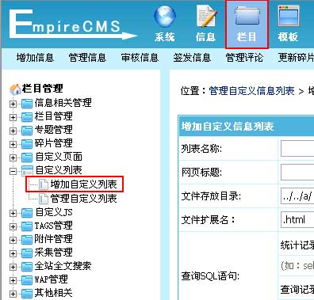
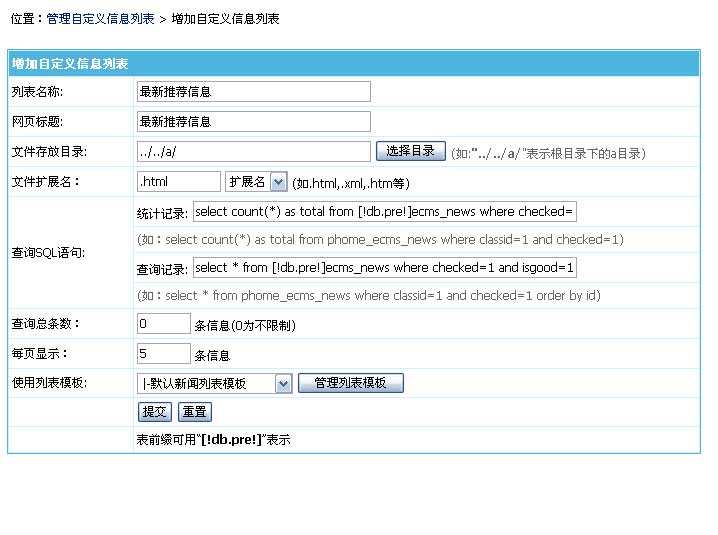
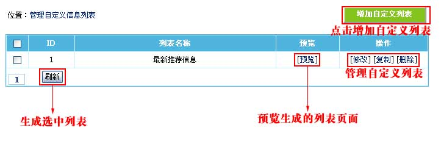
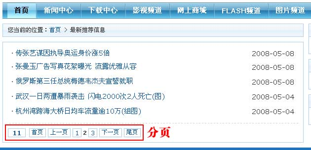

| 二、增加自定义列表 |
| 1、登录后台，单击“栏目”菜单，选择“增加自定义列表”子菜单，进入增加自定义列表界面： |
|  |
| 2、进入增加自定义列表界面，如下图： |
|  |
| 列表名称 |
填写列表名称。 |
| 网页标题 |
填写网页的title名称。 |
| 文件存放目录 |
填写生成的列表文件存放目录（地址从后台目录开始算，“../../”表示在根目录）。 |
| 文件扩展名 |
填写生成的文件扩展名。 |
| 查询SQL语句 |
统计记录：填写统计总信息数的SQL语句。（“select count(*) as total
from ”是固定的格式）
|
| |
查询记录：填写查询信息的SQL语句。（查询SQL条件要和统计记录SQL一致） |
| 查询总条数 |
设置限制最大显示信息的数量。 |
| 每页显示 |
设置每页显示信息数量。 |
| 使用列表模板 |
选择页面使用的列表模板。（列表模板详细制作可以查看“美工手册”） |
| 使用技巧 |
| 如果想将多个列表生成文件放到同一个目录，可以改“文件扩展名”，比如扩展名用：a.html |
|
| 3、增加自定义列表后，返回管理自定义列表页面，如下图： |
|  |
| [预览] |
预览生成的列表页面。 |
| [刷新]按钮 |
更新选中的自定义列表。 |
|
| 4、点击“[预览]”可看到生成的列表页面： |
|  |